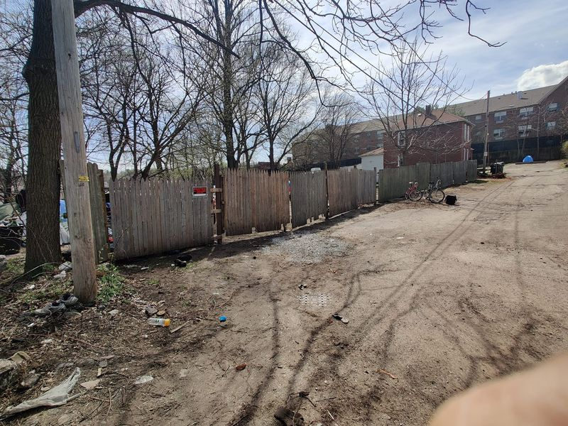

Mobile uploads
I personally do not believe the government needs to be involved in solving homelessness. It actually would not be too difficult to solve if the government would just get out of the way.
Take this new fence that we are building right now. ACME Fence and Lumber donated this. (They have an area in front of their building where they put old fence from jobs where they put up new fence. Anyone can take it at anytime.)
The only thing I've bought for this fence is nails and screws. All of it is recycled materials.
Homeless people are just American citizens that need to start over. They don't need to be given highrise apartments for free. They just need a little space to be safe from predators and police and the government so they can regroup.